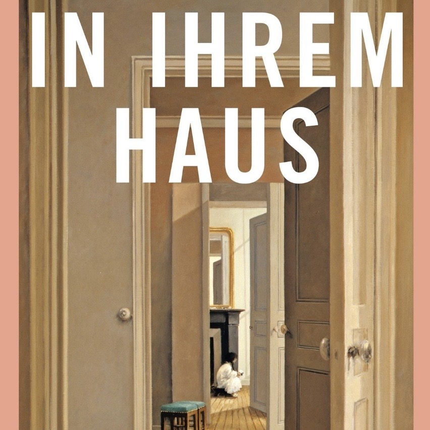

Ein Hörbuch, nur für dich
IN IHREM HAUS
Tippe auf den Knopf. Die Podcasts-App öffnet sich und du kannst das Hörbuch zu deiner Mediathek hinzufügen.
In Podcasts öffnenFunktioniert auf dem iPhone mit der Apple-Podcasts-App.
Es öffnet sich nichts? So geht es von Hand
- Kopiere diese Adresse:
https://kirakrg.github.io/x7k2audio/feed.xml
- Öffne die App Podcasts und tippe unten auf Mediathek.
- Tippe auf Sendung per URL folgen … (steht in der Mitte oder oben rechts hinter den drei Punkten).
- Füge die Adresse ein und tippe auf Folgen.
Tipp für unterwegs: Lade die Kapitel in der App herunter (Download-Symbol bei der Folge oder die Folge länger gedrückt halten). Dann läuft es auch ohne Internet. Im Hintergrund oder bei gesperrtem Bildschirm läuft es sowieso weiter.